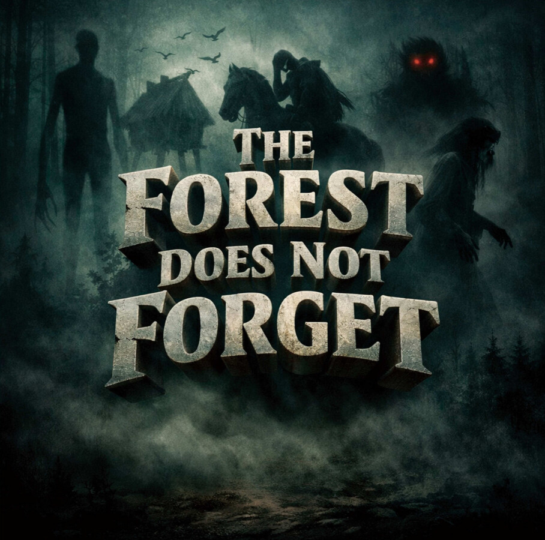

Drum & Bass · Vinyl · Internetradio · Spiele
Über Deep Structure
Deep Structure ist das Musik- und Kunstprojekt von Matthias Reischl aus der Steiermark (Österreich). Im Mittelpunkt steht Drum & Bass mit dunklen, erzählerischen Themen. Dazu kommen Vinyl, ein eigenes Internetradio und selbst entwickelte Spiele und Apps.
Die Musik
Deep Structure macht Drum & Bass, der auch für DJs und den Plattenspieler gedacht ist: tiefe Bässe, treibende Breaks und eine Atmosphäre aus Märchen, Folklore und Tragödien. Viele Alben erzählen eine durchgehende Geschichte, Kapitel für Kapitel.
Neben Drum & Bass entstehen immer wieder Ausflüge in andere Spielarten elektronischer Musik.
Deep Structure Radio
Das eigene Internetradio spielt rund um die Uhr dunkle Märchen, Tragödien und Drum & Bass. Jede Geschichte läuft in ihrer Reihenfolge, Kapitel für Kapitel.
Vinyl

The Forest Does Not Forget
Dunkle Folklore trifft auf Drum & Bass. Märchen, Erinnerung und Schatten, auf Vinyl und mit eigenem Booklet.
- 12″ Vinyl mit Booklet
- Limitierte Auflage
- 12 Tracks, 42 Minuten
Spiele und Apps
Monsterjäger I – Der Ursprung: Aufbau, Strategie und Gruftkämpfe im Comic-Stil, in einem Land, in dem die Toten wieder aufstehen. Die Musik von Deep Structure ist die Uhr des Spiels. Die Demo läuft direkt im Browser.
Clash of the Universe: ein Sci-Fi-Tower-Defense-Spiel fürs Handy im Comic-Stil, derzeit in Entwicklung.
Deep Structure Mastering Studio: Mastering direkt im Browser, mit Song-Check, Reparatur typischer KI-Artefakte und Export als WAV, MP3 oder OGG. Derzeit im Beta-Test.
Comics
Zu Monsterjäger entstehen Comics, die die Hintergründe der Geschichte erzählen, dazu weitere kurze Geschichten. Sie erscheinen kostenlos als PDF zum Herunterladen.
Hören und folgen
Häufige Fragen
Was ist Deep Structure?
Deep Structure ist das Musik- und Kunstprojekt von Matthias Reischl aus der Steiermark (Österreich). Im Mittelpunkt steht Drum & Bass mit dunklen, erzählerischen Themen, dazu Vinyl, ein eigenes Internetradio und selbst entwickelte Spiele und Apps.
Wo kann ich Deep Structure hören?
Auf Spotify, SoundCloud, YouTube, Amazon Music und TikTok, im Deep Structure Internetradio auf deepstructure.world sowie auf Bandcamp, wo es die Alben auch zu kaufen gibt.
Gibt es Deep Structure auf Vinyl?
Ja. Das Album „The Forest Does Not Forget“ ist als 12-Zoll-Vinyl mit Booklet in limitierter Auflage über elasticStage erhältlich.
Welche Spiele gibt es von Deep Structure?
„Monsterjäger I – Der Ursprung“ ist ein Aufbau- und Strategiespiel im Comic-Stil mit Musik von Deep Structure; eine Demo läuft direkt im Browser. In Entwicklung ist außerdem das Sci-Fi-Tower-Defense-Spiel „Clash of the Universe“.